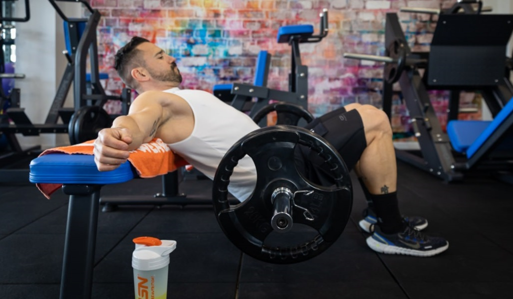
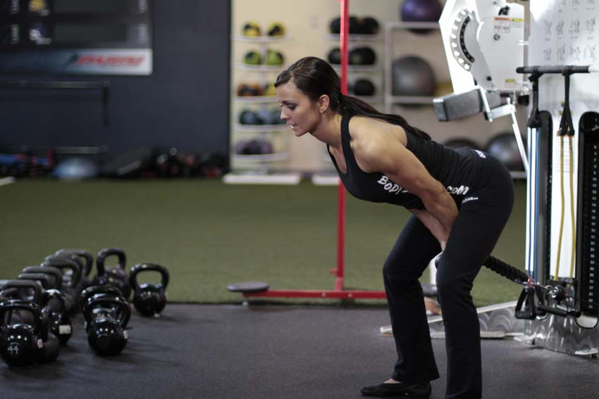
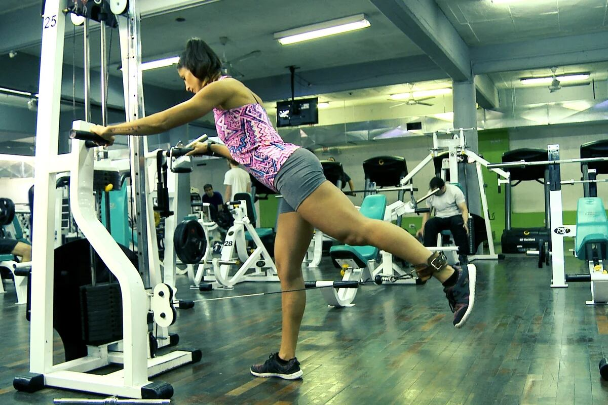

El glúteo es un grupo muscular ubicado en la parte posterior de la pelvis y la parte superior del muslo, compuesto por el glúteo mayor, medio y menor. Estos músculos son vitales para movimientos funcionales como caminar, correr y saltar, así como para mantener la estabilidad del cuerpo. Los glúteos se trabajan mucho en ejercicios como Sentadilla Libre, Zancadas y Peso Muerto, por lo que puedes optar por no realizar ejercicios específicos para este grupo muscular, Si quieres agregar uno decantate por el primero de la lista el cual es el mejor por lejos.
Este ejercicio dirigido principalmente a fortalecer los glúteos y los músculos de la cadena posterior, incluyendo los isquiotibiales y la espalda baja. El Hip Thrust es lo mejor ejercicio que hay para fortalecer y desarrollar los glúteos, si quieres agregar un ejercicio para este músculo agrega este sin dudar.
También conocido como empuje de cadera con cable, este ejercicio excelente para fortalecer los glúteos, los isquiotibiales y los músculos de la cadena posterior. Si bien el anterior ejercicio es mucho mejor ya utiliza un movimiento muy similar pero permitiendo cargar pesos libres. Este ejercicio es una buena alternativa al Hip Thrust si, por ejemplo, dejaste los glúteos para el final de tu rutina de de tren inferior y ya no tienes suficiente energía.
Un ejercicio efectivo para trabajar los músculos glúteos, específicamente el glúteo mayor. Sin mucho que agregar, haz este ejercicio solamente si tienes como prioridad objetivo el desarrollo tus glúteos, ya que con el Hip Thrust sumado a los ejercicios para pierna mencionados en el encabezado es más que suficiente.
